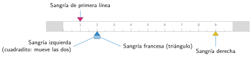
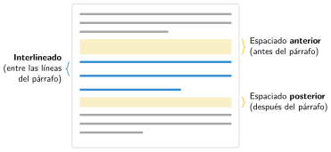

Párrafo: alineación, sangría y espaciado
Criterios: 4a, 4b, 4c
🤔 Pienso10 min
Qué hago aquí: Piensa un momento y contesta con lo que ya sabes. No pasa nada si no lo sabes: es para empezar.
Abre un libro y una carta del banco. ¿Dónde empieza cada párrafo? ¿Cómo sabes dónde acaba uno y empieza otro?
📖 Leo y aprendo40 min
Qué hago aquí: Lee despacio, mira los dibujos y los ejemplos, y quédate con la idea clave del final.
Para Word, un párrafo es todo lo que escribes hasta que pulsas

. El formato de párrafo (Inicio › grupo Párrafo, o el cuadro Párrafo) se aplica al párrafo entero: basta con tener el cursor dentro. Con el botón ¶ (Mostrar todo) ves las marcas de formato: ¶ al final de cada párrafo y · en cada espacio.


En los documentos de oficina el texto suele ir justificado o a la izquierda; los títulos, centrados; y la fecha de una carta, a la derecha.
La sangría es la distancia entre el margen y el párrafo. Hay cuatro:
Se ponen en el cuadro Párrafo (en centímetros) o arrastrando los marcadores de la regla (si no la ves: Vista › Regla):


El espaciado anterior y posterior se mide en puntos (pto) y el interlineado, en líneas (sencillo, 1,15, 1,5, doble) o en puntos (Exacto).
✏️ Hago220 min
Qué hago aquí: Haz las actividades en orden. Empieza siempre por las básicas.
Activa las marcas de formato (¶) en el texto de muestra y cuenta cuántos párrafos hay. ¿Cuántos son párrafos vacíos?
Alinea cada párrafo como dice su primera frase: justificado, a la izquierda, a la derecha y centrado. Usa los atajos de teclado.
Aplica a los textos de Traidor las sangrías que se indican: izquierda de 2,5 cm; derecha de 3 cm; primera línea de 6 cm; derecha de 6 cm; y francesa de 4 cm. Hazlo una vez con el cuadro Párrafo y otra con la regla.
En el texto sobre los tiburones, pon el espaciado que se indica en cada párrafo: anterior 24 y posterior 18; anterior 20 y posterior 6; anterior 12 y posterior automático.
Tarea de repaso. Copia el artículo 2 del Estatuto de los Trabajadores del BOE. Título iluminado de 18 puntos en oro; el artículo con la fuente y los bordes que elijas; y el texto de las horas extraordinarias con sangría francesa de 3 cm, en Abadi y en morado.
Escribe qué alineación, sangría y espaciado le pondrías a cada parte de una carta comercial.
- Fecha:
- Cuerpo de la carta:
- Firma:
Un compañero ha separado los párrafos con dos
y ha metido la primera línea con cinco espacios. Explícale qué problemas tendrá y cómo hacerlo bien.
🚀 Amplío (si quieres saber más)
Qué hago aquí: ¿Has terminado? Lee la curiosidad o elige el reto. Es voluntario.
Investiga la opción Control de líneas viudas y huérfanas (cuadro Párrafo › Líneas y saltos de página). ¿Qué evita? ¿Y Conservar con el siguiente?
✅ Compruebo10 min
Qué hago aquí: Contesta sin mirar la ficha y marca cómo lo llevas.